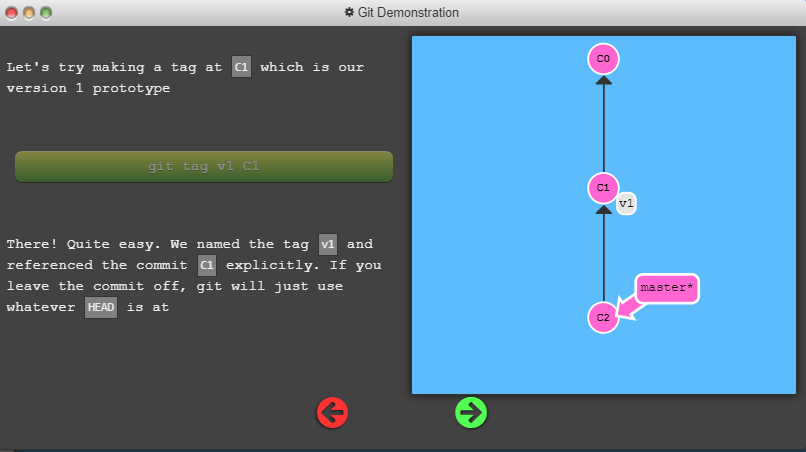

Before we get to some of the more advanced features of Git, it's important to understand different ways to move through the commit tree that represents your project.
First we have to talk about "HEAD". HEAD is the symbolic name for the currently checked out commit -- it's essentially what commit you're working on top of.
HEAD always points to the most recent commit which is reflected in the working tree. Most git commands which make changes to the working tree will start by changing HEAD.
Normally HEAD points to a branch name (like bugFix). When you commit, the status of bugFix is altered and this change is visible through HEAD.
You can also reference HEAD as a relative ref. Let's use that a couple of times to move upwards in the commit tree
Easy! We can travel backwards in time with HEAD^
HEAD before commit
HEAD after commit
Detaching HEAD
Detaching HEAD
Moving around in Git by specifying commit hashes can get a bit tedious. In the real world you won't have a nice commit tree visualization next to your terminal, so you'll have to use git log to see hashes.
Furthermore, hashes are usually a lot longer in the real Git world as well. For instance, the hash of the commit that introduced the previous level is fed2da64c0efc5293610bdd892f82a58e8cbc5d8. Doesn't exactly roll off the tongue...
The upside is that Git is smart about hashes. It only requires you to specify enough characters of the hash until it uniquely identifies the commit. So I can type fed2 instead of the long string above.
Like I said, specifying commits by their hash isn't the most convenient thing ever, which is why Git has relative refs. They are awesome!
With relative refs, you can start somewhere memorable (like the branch bugFix or HEAD) and work from there.
Relative commits are powerful, but we will introduce two simple ones here:
Let's look at the Caret (^) operator first. Each time you append that to a ref name, you are telling Git to find the parent of the specified commit.
You can also reference HEAD as a relative ref. Let's use that a couple of times to move upwards in the commit tree
Say you want to move a lot of levels up in the commit tree. It might be tedious to type ^ several times, so Git also has the tilde (~) operator.
The tilde operator (optionally) takes in a trailing number that specifies the number of parents you would like to ascend. Let's see it in action
You're an expert on relative refs now, so let's actually use them for something.
One of the most common ways I use relative refs is to move branches around. You can directly reassign a branch to a commit with the -f option. So something like:
git branch -f master HEAD~3moves (by force) the master branch to three parents behind HEAD.
There are many ways to reverse changes in Git. And just like committing, reversing changes in Git has both a low-level component (staging individual files or chunks) and a high-level component (how the changes are actually reversed). Our application will focus on the latter.
There are two primary ways to undo changes in Git -- one is using git reset and the other is using git revert. We will look at each of these in the next dialog
The first command in this series is called git cherry-pick. It takes on the following form:
git cherry-pick <Commit1> <Commit2> <...>It's a very straightforward way of saying that you would like to copy a series of commits below your current location (HEAD). I personally love cherry-pick because there is very little magic involved and it's easy to understand.
Git cherry-pick is great when you know which commits you want (and you know their corresponding hashes) -- it's hard to beat the simplicity it provides.
But what about the situation where you don't know what commits you want? Thankfully git has you covered there as well! We can use interactive rebasing for this -- it's the best way to review a series of commits you're about to rebase.
All interactive rebase means is using the rebase command with the -i option.
If you include this option, git will open up a UI to show you which commits are about to be copied below the target of the rebase. It also shows their commit hashes and messages, which is great for getting a bearing on what's what.
For "real" git, the UI window means opening up a file in a text editor like vim. For our purposes, I've built a small dialog window that behaves the same way.
When the interactive rebase dialog opens, you have the ability to do 3 things:

Here's a development situation that often happens: I'm trying to track down a bug but it is quite elusive. In order to aid in my detective work, I put in a few debug commands and a few print statements.
All of these debugging / print statements are in their own commits. Finally I track down the bug, fix it, and rejoice!
Only problem is that I now need to get my bugFix back into the master branch. If I simply fast-forwarded master, then master would get all my debug statements which is undesirable. There has to be another way...
Here's another situation that happens quite commonly. You have some changes (newImage) and another set of changes (caption) that are related, so they are stacked on top of each other in your repository (aka one after another).
The tricky thing is that sometimes you need to make a small modification to an earlier commit. In this case, design wants us to change the dimensions of newImage slightly, even though that commit is way back in our history!!
We will overcome this difficulty by doing the following:
There are many ways to accomplish this overall goal (I see you eye-ing cherry-pick), and we will see more of them later, but for now let's focus on this technique. Lastly, pay attention to the goal state here -- since we move the commits twice, they both get an apostrophe appended. One more apostrophe is added for the commit we amend, which gives us the final form of the tree
That being said, I can compare levels now based on structure and relative apostrophe differences. As long as your tree's master branch has the same structure and relative apostrophe differences, I'll give full credit
EXERCISE
As you saw in the last level, we used rebase -i to reorder the commits. Once the commit we wanted to change was on top, we could easily --amend it and re-order back to our preferred order
The only issue here is that there is a lot of reordering going on, which can introduce rebase conflicts. Let's look at another method with git cherry-pick
So in this level, let's accomplish the same objective of amending C2 once but avoid using rebase -i. I'll leave it up to you to figure it out! :D
So in this level, let's accomplish the same objective of amending C2 once but avoid using rebase -i. I'll leave it up to you to figure it out! :D Remember, the exact number of apostrophe's (') on the commit are not important, only the relative differences. For example, I will give credit to a tree that matches the goal tree but has one extra apostrophe everywhere
As you have learned from previous lessons, branches are easy to move around and often refer to different commits as work is completed on them. Branches are easily mutated, often temporary, and always changing.
If that's the case, you may be wondering if there's a way to permanently mark historical points in your project's history. For things like major releases and big merges, is there any way to mark these commits with something more permanent than a branch?
You bet there is! Git tags support this exact use case -- they (somewhat) permanently mark certain commits as "milestones" that you can then reference like a branch.
More importantly though, they never move as more commits are created. You can't "check out" a tag and then complete work on that tag -- tags exist as anchors in the commit tree that designate certain spots.

or this level just create the tags in the goal visualization and then check v1 out. Notice how you go into detached HEAD state -- this is because you can't commit directly onto the v1 tag.
git tag V0 C1
git tag V1 C2
git checkout C2
OR
git tag v1 side~1
git tag v0 master~2
git checkout v1
Because tags serve as such great "anchors" in the codebase, git has a command to describe where you are relative to the closest "anchor" (aka tag). And that command is called git describe!
Git describe can help you get your bearings after you've moved many commits backwards or forwards in history; this can happen after you've completed a git bisect (a debugging search) or when sitting down at a coworkers computer who just got back from vacation.
Git describe takes the form of:Git describe takes the form of:
git describe <ref>
Where <ref> is anything git can resolve into a commit. If you don't specify a ref, git just uses where you're checked out right now (HEAD).
The output of the command looks like:
<tag>_<numCommits>_g<hash>
Where tag is the closest ancestor tag in history, numCommits is how many commits away that tag is, and <hash> is the hash of the commit being described.
EXERCISE
git commit
Man, we have a lot of branches going on here! Let's rebase all the work from these branches onto master.
Upper management is making this a bit trickier though -- they want the commits to all be in sequential order. So this means that our final tree should have C7' at the bottom, C6' above that, and so on, all in order.
git rebase master bugFix
git rebase bugFix side
git rebase side another
git rebase another master